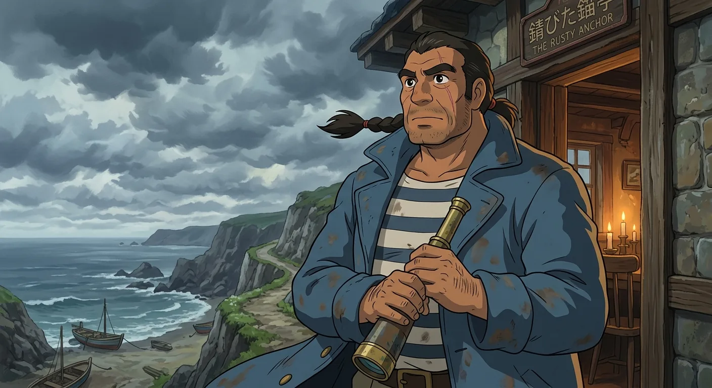
A Scarred Stranger Seeks Refuge
A boy named Jim lives at an inn called the Admiral Benbow with his father. One day, a tall stranger comes to stay. He has sun-browned skin and a long pigtail in his hair. His hands are rough from working on ships. He calls himself Captain and pays with gold coins.
The Captain spends his days looking out at the sea with a telescope. He drinks rum by the fire at night. He likes to sing old sailor songs and tell wild stories about faraway places. He asks Jim to watch the road and tell him if any sailors come by. He seems worried about someone finding him. Jim wonders who the Captain is hiding from.
A kind doctor named Livesey visits the inn sometimes. He is not afraid of the grumpy Captain. Jim does not know it yet, but this is just the beginning of a very big adventure.
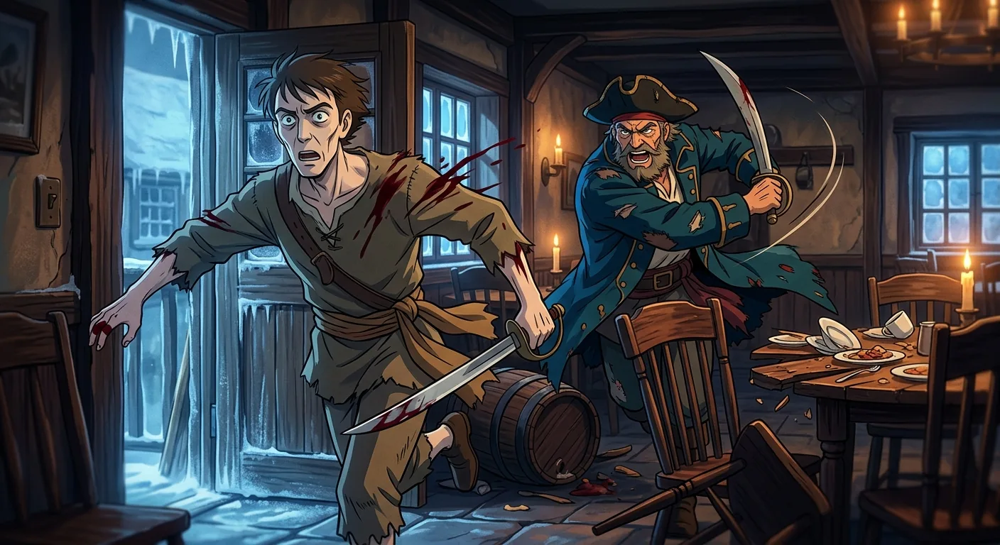
A Stranger's Sinister Ambush
One cold, frosty morning, a stranger came into the Admiral Benbow inn. He was a pale man from the sea, and he was missing two fingers on one hand. He asked about "his mate Bill," which was really the captain. The stranger waited and waited, watching the road. When the captain finally came home, he turned white as snow. "Black Dog!" he cried out, looking very scared. The two men sat down to talk, but soon they began to argue loudly. Then there was a big crash and Black Dog ran away over the hill. The captain stumbled back inside and fell down on the floor. He was very sick. Doctor Livesey came and helped him get to bed. The doctor said the captain needed lots of rest to get better. But young Jim had a worried feeling that more trouble was on its way to the little inn by the sea.
The rest is waiting.
58 illustrated classics. Cinematic, anime, and kids editions. $4.99 a month — about the price of a coffee.
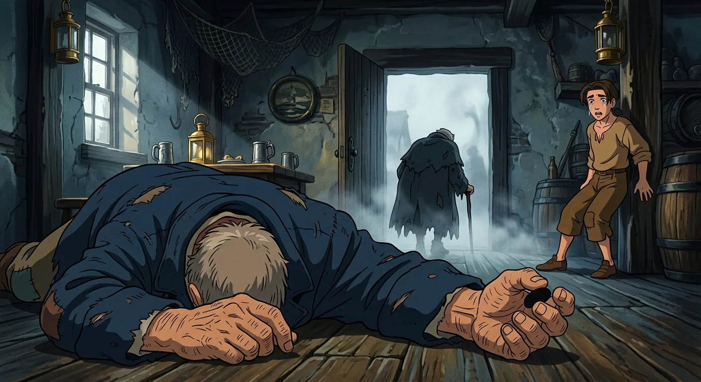
A Dying Man's Desperate Warning
The captain was very sick and stayed in bed feeling weak and worried. I brought him drinks and medicine to help him feel better. He was scared and asked me to watch out for a one-legged man and some rough sailors who might come looking for him. He told me an important secret about his old sea-chest and made me promise to get help if strangers came around.
Then something very sad happened. My dear father passed away, and my mother and I felt so heartbroken. We had to say goodbye to him, and our house felt so quiet and lonely. A few days later, a strange blind man came tapping through the foggy cold. He was not kind at all, and he gave the captain a little black paper as a warning. The captain got very upset when he saw it. Then the captain fell down and his heart gave out. I cried and cried because I had lost two people in just a few days, and I felt very scared about what might happen next.
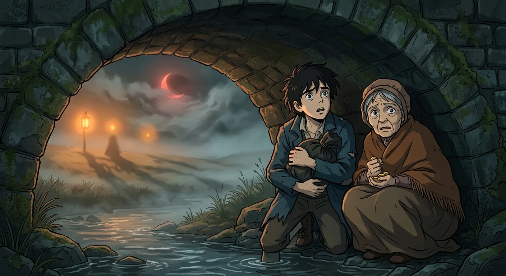
A Mother's Courage and the Dead Man's Key
The captain had been staying at the inn for a long time. Now he was gone, and Jim and his mother needed help. They knew some rough sailors might come looking for the captain's things. Jim and his mother were scared, but they were also brave. They ran through the foggy night to ask their neighbors for help. But the neighbors were too frightened to come back with them. Jim's mother stood up tall and said she would not leave behind the money the captain owed them. So Jim and his mother went back to the inn all by themselves. They found a special key and used it to open the captain's old sea chest. Inside were clothes, shells from faraway beaches, silver coins, and a bundle of papers wrapped up tight. Jim's mother carefully counted out only the coins she was owed. Then they heard a tapping sound outside. Someone was coming! They grabbed what they needed and ran out into the moonlight to hide.
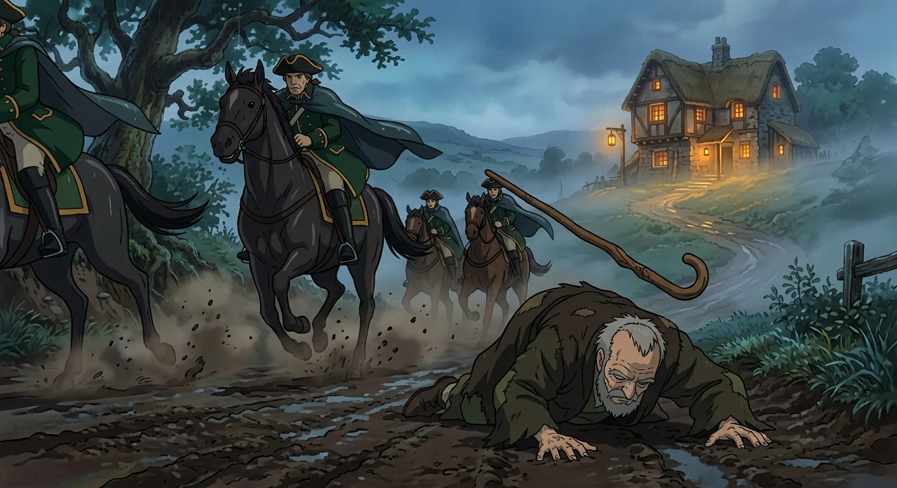
The Blind Beggar's Desperate Rage
I hid behind a bush and watched the road. Soon I saw seven or eight men running through the mist toward our inn. In the middle was the blind beggar called Pew. He shouted for them to go inside and find something important. They rushed into the Admiral Benbow and searched everywhere. I could hear their feet stomping up the stairs. But they could not find what they wanted. It was the packet I had hidden safe in my pocket!
Pew was very angry. He yelled at his men to keep looking. But then a whistle blew from the hill. It was a warning! The men got scared and wanted to leave. Pew tried to stop them, but they ran away without him. Soon horses came galloping down the road. They were helpers coming to save us! The bad men scattered into the night. My mother felt better after some rest. Then a kind man named Dance took me to see the doctor. I still had the mystery packet safe with me.
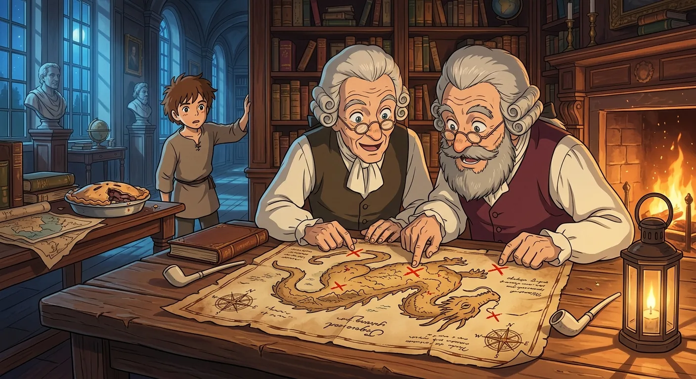
The Oilskin Packet Reveals Its Secrets
We rode through the night on horses until we reached a big fancy house. Inside, a tall man called Squire Trelawney and kind Dr. Livesey sat by a warm fire. They listened to our story about the inn and the scary men who came looking for the sea chest. When they heard how brave my mother had been, they cheered and clapped!
The squire gave me yummy pie because I was so hungry after all our adventures. Then everyone gathered close to open the special packet we had brought. Inside was a little book and a folded paper. The book showed numbers and dates from long ago. But the folded paper was the real treasure. It was a map of an island shaped like a dragon! Red marks showed where something special was hidden. The squire got so excited he wanted to sail there right away. I would go too, as a helper on the ship! Dr. Livesey reminded everyone to keep the map a secret so we could stay safe on our journey.
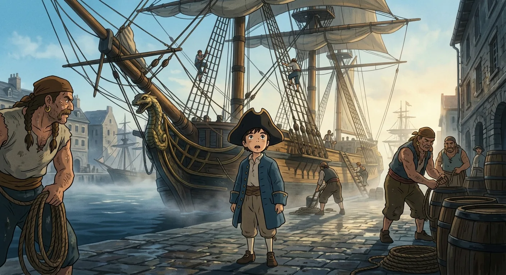
A Crew of Old Salts Assembled
The wait to leave took longer than anyone thought. The doctor went to London, and the squire went to Bristol to get the ship ready. I stayed behind at the big hall with old Redruth, the gamekeeper. I felt stuck there, but my mind was full of wonderful dreams about what was coming.
I looked at the treasure map for hours and hours. I imagined sailing to the island in so many different ways. I pictured climbing the tall hill called Spy-glass and seeing amazing views from the top. My daydreams were full of wild adventures waiting for me there.
Then a letter came from the squire with exciting news. He had found our ship! It was a lovely boat called the Hispaniola. He also found a cook named Long John Silver, a friendly sailor with one leg who knew lots of seafaring men. Silver helped the squire find a whole crew of tough, brave sailors.
The letter said I should visit my mother, then hurry to Bristol. I was so excited! I went home to the Admiral Benbow inn and found it looking beautiful with fresh paint. A new boy was there to help my mother while I was away. Seeing him in my place made me feel funny inside. I cried a little when I said goodbye to my mother and my home by the sea.
Redruth and I rode through the night on a coach. When I woke up, we were in Bristol! We walked along the water and I saw ships of every kind. Sailors were singing and climbing high up on ropes. The air smelled like salt and the sea. I felt like I was seeing magic everywhere.
Then we found the squire, dressed in blue like a sailor and grinning big. He told us the doctor had arrived and the whole crew was ready. I asked when we would sail. He said just one word that made my heart jump with joy. "Tomorrow!"
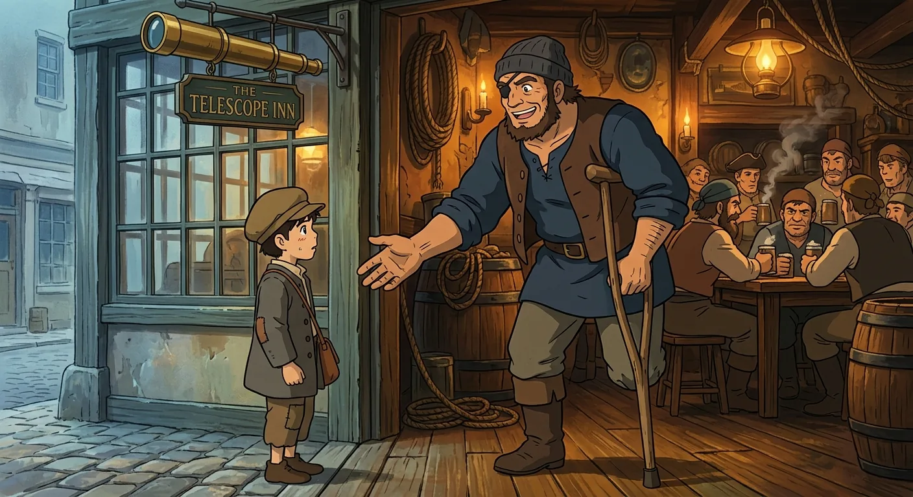
Black Dog Appears and Disappears
After breakfast, Jim Hawkins got a note to deliver to a man named Long John Silver. Jim walked through the busy docks to find a tavern called the Spy-glass. It was a bright, cheerful place with a shiny brass telescope hanging above the door. Inside, Jim saw many sailors talking loudly. Then he spotted a tall, strong man hopping about on a wooden crutch, whistling a happy tune. This was Long John Silver! He had lost one leg long ago, but he moved around so quickly and cheerfully that he seemed almost like a bird. Jim had been a little worried about meeting Long John, but this friendly man with his big smile put Jim right at ease.
Just then, Jim noticed someone run out the door very fast. It was a sneaky man Jim had seen before! Long John seemed upset that this rude fellow had run away without paying. He walked Jim to meet the squire and the doctor, telling him wonderful stories about ships along the way. Everyone agreed that Long John seemed like a fine shipmate. Then the squire asked Jim to come see their beautiful ship, and off they went together.
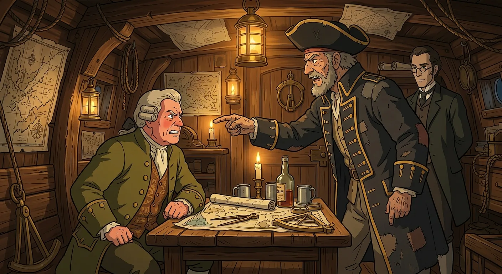
A Captain's Warning
We finally reached the big ship called the *Hispaniola*. It was anchored near many other ships with their ropes swinging all around. A friendly old sailor named Arrow met us on deck. He had earrings and a funny squint that made him look like he was always joking. But the captain was not so friendly at all.
Captain Smollett had a very worried face. He came to talk to the grown-ups right away. He said too many people on the ship knew about the treasure. He thought it should be a secret, but somehow the sailors had found out. This made him uneasy. He wanted to move important supplies closer to where Jim and his friends would sleep. He wanted everyone to be careful and stay safe. The squire got upset because the captain seemed grumpy. But the doctor thought the captain was just being wise. Jim did not like being told what to do, but deep down he knew the captain wanted to keep everyone safe on this big adventure.
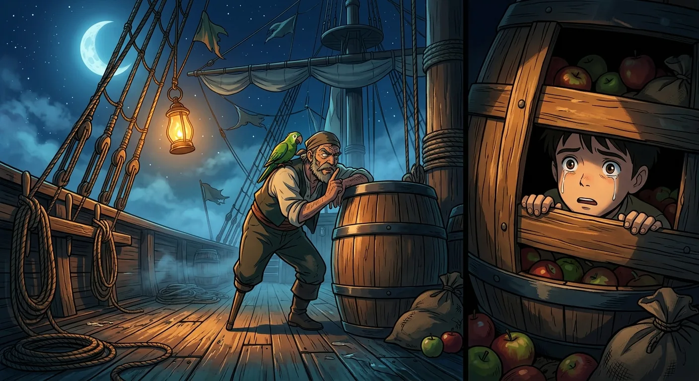
Setting Sail with Silver's Song
The night before the ship sailed was very busy. Little boats came and went through the dark. The crew packed everything and got the ship ready. Young Jim was so tired but too excited to sleep. Everything amazed him: the crisp calls, the whistles, the sailors moving in lantern-light.
Then Long John Silver began to sing an old sea song. The whole crew joined in, singing loudly as they worked. The song reminded Jim of the old captain back at the inn. Soon the anchor came up, the sails caught the wind, and the ship glided away toward Treasure Island at last!
During the voyage, Silver was very kind to Jim. He told wonderful stories about his parrot, named Cap'n Flint. The colorful bird could say "Pieces of eight!" over and over. Silver moved around the ship so cleverly with his crutch, and he kept his kitchen sparkling clean. Jim thought Silver was the nicest man on the whole ship. But one quiet evening, Jim climbed into an apple barrel to get a snack. He got sleepy and almost dozed off. Then someone sat down nearby and started talking. It was Silver's voice—and Jim heard something very surprising that changed everything.
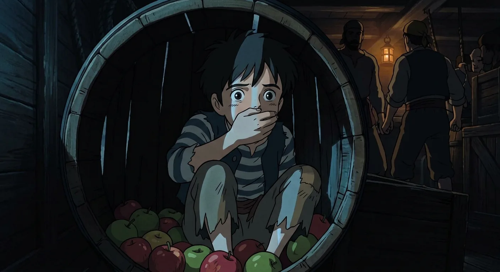
Silver's Dark Confession in the Hold
Jim was hiding inside a big barrel of apples on the ship. It was dark and quiet in there. He could hear Long John Silver talking nearby. Silver was telling stories to a young sailor. Jim listened carefully and heard something very surprising. Silver was not a nice cook at all. He was really a sneaky pirate!
Silver was making secret plans with some of the other sailors. They wanted to wait until the treasure was found. Then they would take it all for themselves. Jim felt scared and sad. He had trusted Silver so much. The friendly cook had fooled everyone with his big smile and kind words. Jim wanted to warn his friends right away. But he had to stay hidden and very still. Then something wonderful happened. Someone up high on the ship shouted out exciting news. They could see land! The island with the treasure was finally close.
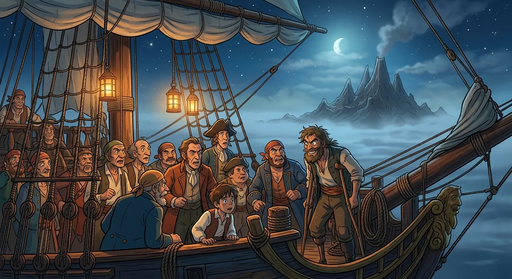
Land Ho, Secrets Below
A great shout rang out across the ship. Everyone rushed to look. The fog had lifted, and there in the moonlight stood three hills. They rose sharp and tall against the sky. It was the island at last! Jim felt his heart pound. He had just heard something very scary while hiding. Now he had to tell his friends what he knew.
A sailor named Silver said he knew this place from long ago. He spoke in a friendly way and even smiled at Jim. But Jim knew Silver was not as nice as he seemed. When the doctor called Jim over, Jim whispered that he had something important to share. Soon the captain and their friends met in the cabin below. Jim told them everything he had heard. They listened very carefully. Then they thanked Jim for being so brave. Now they had to make a plan together and watch out for trouble ahead.
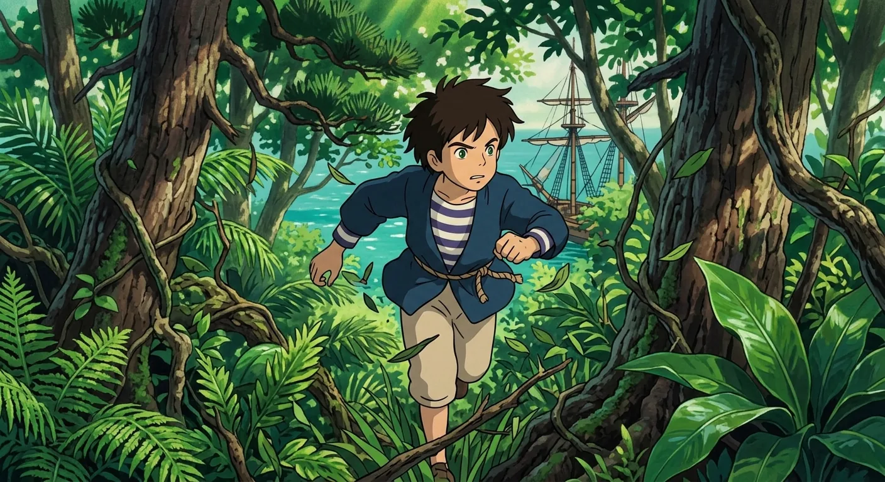
A Grim Arrival at Treasure Island
The morning came, and Jim saw Treasure Island for the first time. The ship had stopped moving because there was no wind. The island looked grey and gloomy, with dark woods and sandy beaches. Tall rocky hills rose up behind the trees. The biggest hill was called the Spy-glass. Jim did not like the look of this place at all. The ship rocked back and forth on the waves. This made Jim feel sick and dizzy. His heart felt heavy and sad.
The sailors had to row the ship to a safe spot near the island. It was hard, hot work, and the men were grumpy. Long John Silver helped steer the ship because he knew these waters well. When they stopped, the air smelled like old wet leaves. The captain let some sailors go to the island for fun. Just then, Jim had a wild idea. He hopped into a boat and ran off into the trees all by himself. Silver called after him, but Jim kept running until he was alone in the forest.
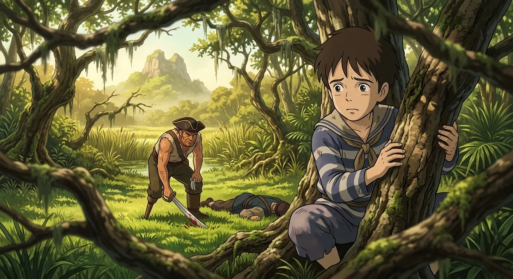
A Death Cry in the Marsh
Jim slipped away from Silver and the pirates to explore the island all by himself. He felt so happy and free! He walked through marshes with tall willows and squelchy ground. He climbed sandy hills dotted with pine trees and strange twisted oaks. Colorful flowers bloomed everywhere, and birds sang in the branches above him. Jim felt like he had found a magical world of his own.
Then something made all the ducks fly up from the reeds at once. Jim heard voices coming closer, so he hid under a tree and stayed very still. He saw Silver talking to a sailor named Tom. Silver wanted Tom to join the pirates, but brave Tom said no. He would never turn against his friends. Then a terrible cry echoed across the marsh, and Jim knew something very bad had happened to another good sailor. Tom tried to run away, but Silver hurt him badly. Jim was so scared that he ran and ran through the trees until something new made him stop.
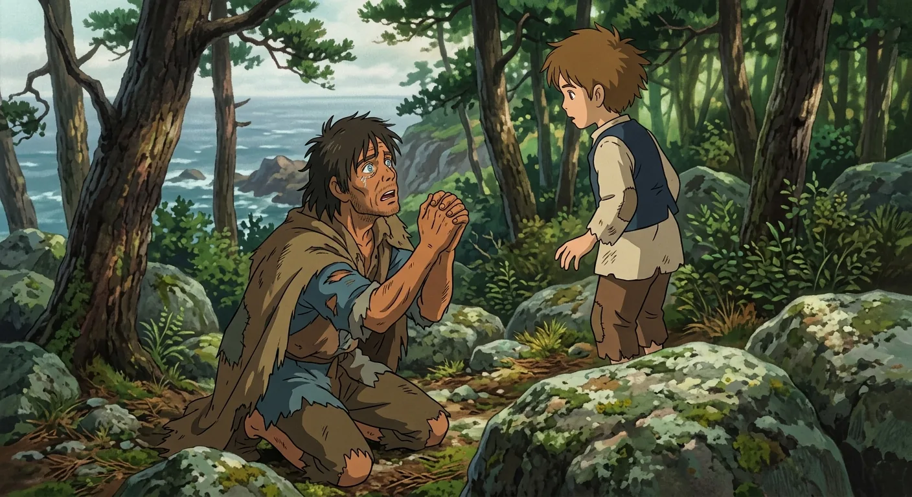
Ben Gunn's Lonely Island Refuge
Something moved on the hillside, and I saw a strange, shaggy figure dart behind a tree. At first I did not know if it was a person or an animal. I felt scared, but I walked toward it anyway. The figure came closer, moving quickly from tree to tree. Then I saw it was a man after all.
He dropped to his knees and held out his hands in a friendly way. His voice sounded scratchy and tired when he spoke. "I'm poor Ben Gunn," he said. "I haven't talked to anyone in three whole years." He looked thin and ragged, with tattered clothes held together by buttons and string. He had been left alone on this island long ago, eating berries and oysters to stay alive. More than anything, he missed cheese and dreamed about it at night.
Ben Gunn told me he knew secrets about the island and wanted to help my friends. Suddenly we heard a loud boom from far away. We ran together through the trees, and soon I spotted a bright flag waving above the treetops where my companions were waiting.
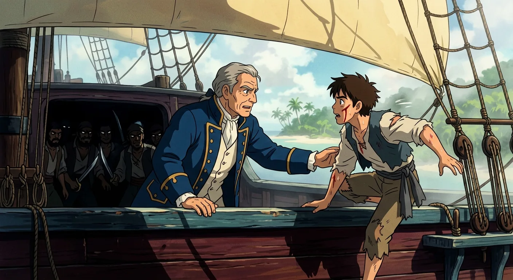
The Stockade and the Death Cry
The captain and his friends were stuck on the big ship. Most of the pirates had rowed to the island. Only six grumpy pirates stayed on board. Then someone brought scary news. Young Jim had sneaked into a boat and gone to shore with the pirates! Everyone worried about him so much.
The doctor took a small boat to explore. He found a little log house on a hill with a spring of fresh water inside. It had strong walls to keep people safe. This was just what they needed! Then a loud, terrible cry came from far away on the island. The doctor felt his heart beat fast. He hoped Jim was okay.
The doctor hurried back to the ship with a plan. Everyone worked together to load boats with food, water, and supplies. They made trip after trip to the safe little house. One sailor named Gray decided to join the good guys instead of the pirates. He got a little hurt but made it to their boat. Now they just had to reach the stockade safely.
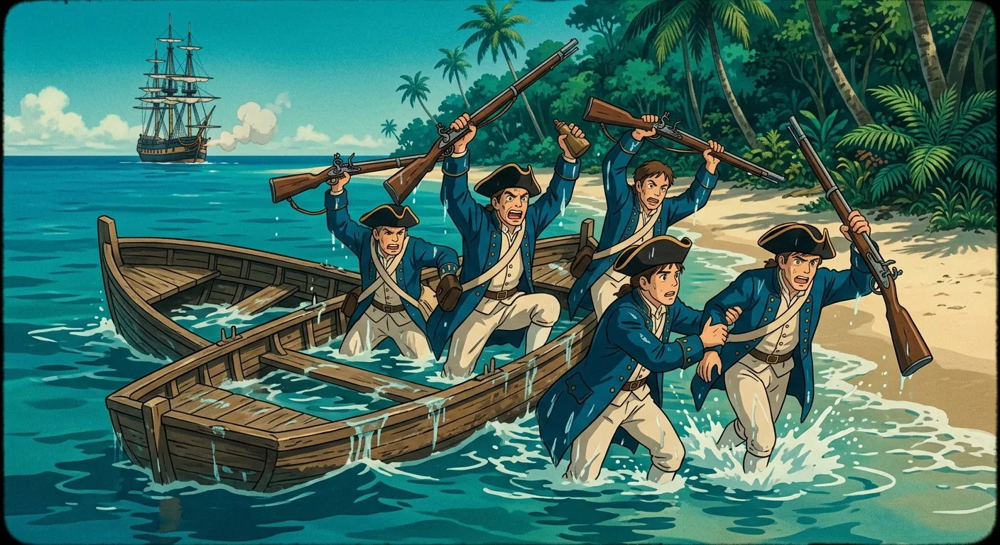
Desperate Crossing Under Enemy Fire
Our little boat sat so low in the water! It carried five grown-ups plus lots of supplies. The water even splashed over the sides and got everyone wet. A strong current tried to push the boat the wrong way. The captain told everyone to be patient and keep rowing.
Then someone spotted trouble back on the big ship. Some bad pirates were getting a cannon ready to shoot at them! The captain asked Trelawney to try to stop them, but he missed. The pirates fired the cannon with a big boom. The cannonball flew right over the little boat, but the splash made the boat tip and sink in shallow water. Luckily the water was not deep at all. Everyone stood up, soaking wet but safe. They had to leave their supplies behind in the sunken boat. Now they needed to hurry and wade to shore. They had to reach their safe place before the pirates could catch up to them.
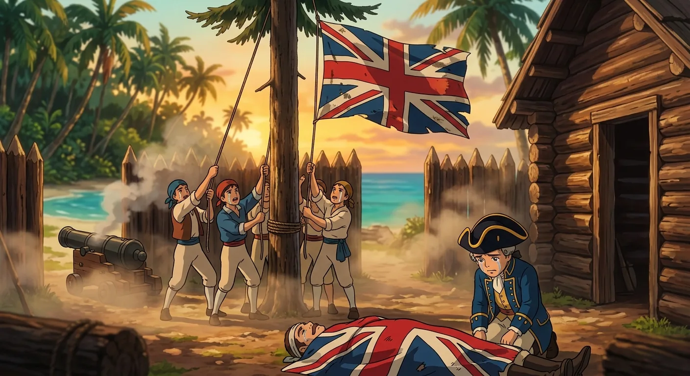
The Flag Rises, Redruth Falls
We pressed on through the woods toward the wooden fort. The pirates were chasing us, crashing through the trees behind. Everyone got ready for trouble, checking their weapons and staying brave. Gray showed he was strong and quick with a sword, which made the others feel better.
We reached the fort just in time. Some pirates came running around the corner, but our friends surprised them and scared most of them away. Sadly, kind old Tom Redruth got hurt very badly. He had been so brave and helpful the whole journey. His friends stayed close and held his hand. They said a prayer together, and then Tom quietly went to sleep forever. Everyone felt very sad, especially the squire who cared about him so much.
The captain put up a big flag on a tall tree to show they would not give up. The pirates tried shooting at the fort, but the cannonballs landed in the sand and nobody got hurt. Just when things seemed hard, who should come climbing over the fence? Jim Hawkins, safe and sound at last!
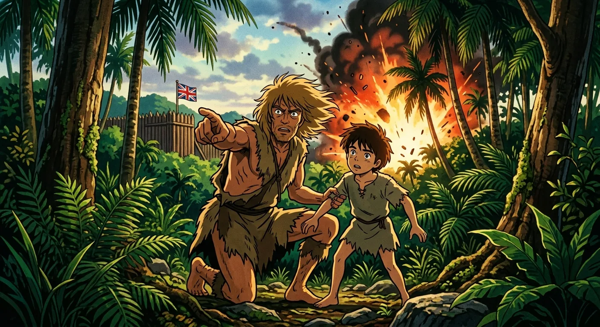
Ben Gunn's Warning and the Bombardment
Jim watches from the woods as Ben Gunn spots a flag flying over the stockade. Ben knows it is not a pirate flag. It is the good flag, which means Jim's friends are safe inside the wooden fort. But Ben will not come with Jim just yet. He is still a bit shy and scared. He makes Jim promise to remember something important. If anyone wants to find Ben, they must come alone and wave something white.
Suddenly, loud booms echo across the island. The ship is firing cannons! Jim hides behind trees and rocks until the noise finally stops at sunset. He feels cold and tired. He peeks at the beach and sees the pirates making a big fire. Then he hurries through the woods to find his friends.
Inside the little log cabin, Jim finds the captain and the doctor and the others. The cabin is smoky and sandy, but everyone is glad to see Jim. The captain keeps everyone busy and cheerful. They share a simple supper and get some rest. The next morning, someone shouts a warning. A white flag is coming, and Long John Silver is walking right toward them.
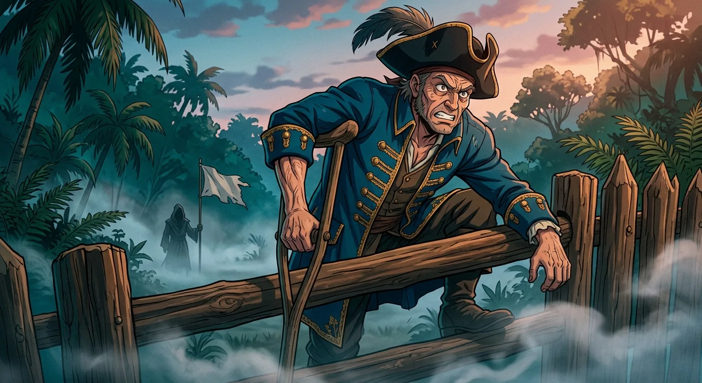
Silver's Parley at the Stockade
The morning sun rose over the little wooden fort, making the treetops glow pink. Two men stood outside the fence in the swirly mist. One of them was Long John Silver, and he waved a white flag. That meant he wanted to talk, not fight.
Captain Smollett stayed safe inside and called out to ask what Silver wanted. Silver climbed over the fence, which was very hard with his crutch. He wore a fancy blue coat with shiny buttons and a nice hat. The captain would not let him sit by the warm fire. Silver asked if the captain would give him the treasure map. He said the pirates would let everyone go home safely if they did. But Captain Smollett said no. He told Silver that the pirates could not find the treasure without help. Silver got very angry. His face turned red and he said mean things. Then he climbed back over the fence and disappeared into the trees. Everyone in the fort knew the pirates would be back soon.
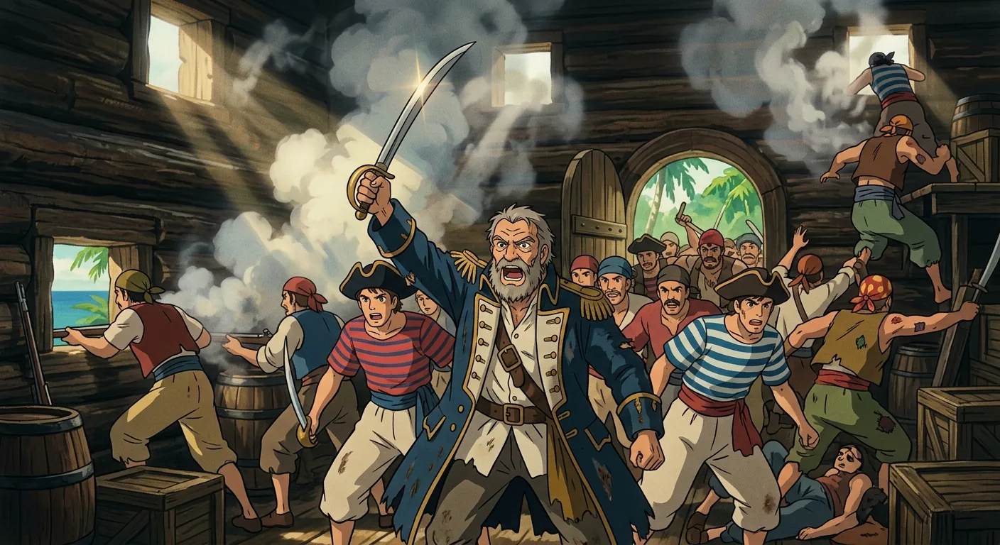
The Stockade Under Siege
Long John Silver left the little log house, and the captain got ready for a big fight. He was a bit cross because some of his friends had not been watching carefully. Only Gray had stayed at his window like a good helper. The captain told everyone where to stand and what to do. They had guns and swords ready, and they put out the fire so the smoke would not get in their eyes.
Then they waited and waited in the hot sun. It felt like forever. Suddenly, the pirates came running out of the woods toward the little house. There was lots of noise and shouting. The fight was scary and fast. Jim grabbed a sword and ran outside to help his friends. When it was all over, the pirates ran away. The captain and his friends had won, but some of them got hurt. Hunter was knocked down and could not wake up. The captain was hurt too, but his friends took care of him.
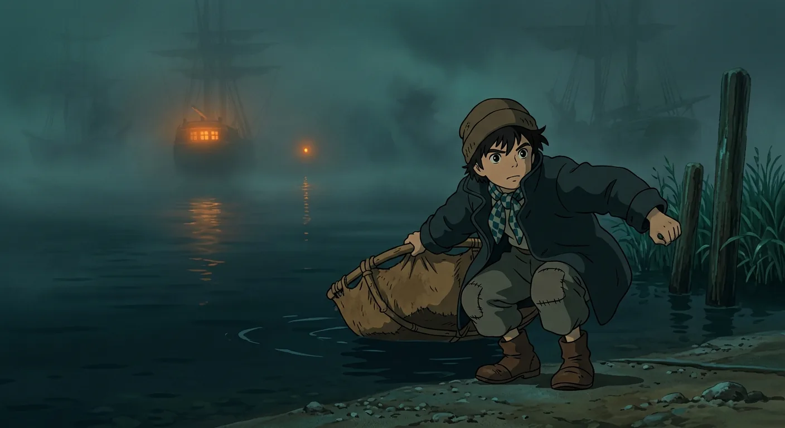
A Reckless Escape Into the Woods
After a hard day, everyone tried to rest and get better. The captain was hurt, but the doctor said he would be okay with time. He just needed to stay very still and quiet for a while. The doctor fixed up Jim's sore hands too and gave him a gentle scolding.
Then something surprising happened. The doctor put the treasure map in his pocket and walked off into the woods! Jim thought he must be going to find Ben Gunn, the friendly man who lived on the island. Jim felt so hot and sticky sitting there in the sun. He wished he could go exploring too. So he filled his pockets with biscuits and made a brave decision. He would sneak away to find the little boat Ben Gunn had told him about. When no one was looking, Jim slipped over the fence and ran into the cool, shady trees. He walked until he reached the sea, sparkling blue and beautiful. As night came and fog rolled in, Jim found a tiny handmade boat hidden under a white rock. He had a new exciting plan. He would paddle out in the darkness and set the big ship loose so the pirates could not use it anymore.
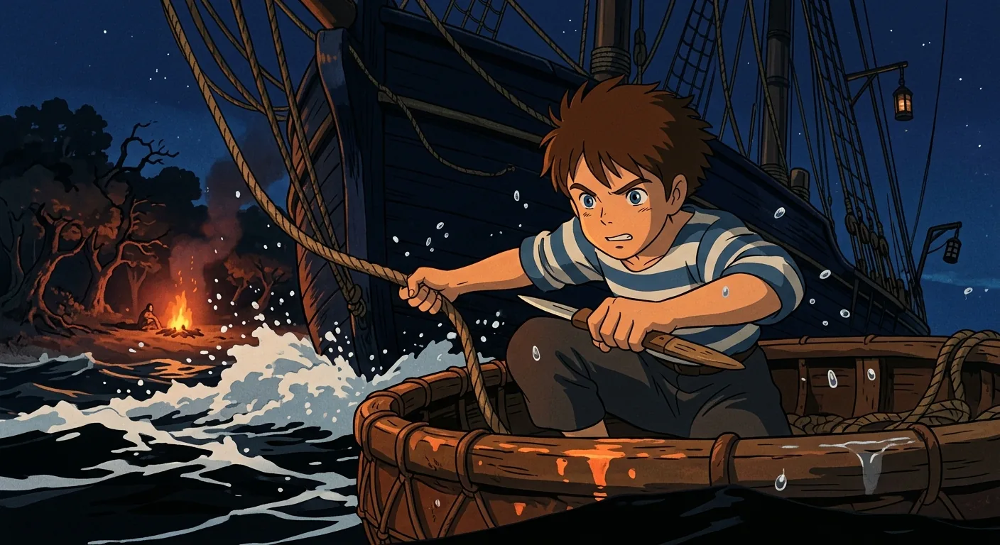
A Coracle's Wild Drift to the Ship
Jim climbed into a tiny little boat called a coracle. Ben Gunn had made it from sticks and animal skins. It was very wobbly and hard to steer! It spun around and went every way except where Jim wanted. But the ocean current helped push him toward the big ship.
Soon Jim could see the Hispaniola in the darkness. He grabbed onto a thick rope that held the ship in place. He wanted to cut the rope so the ship would float away from the pirates. He had to be very careful and wait for just the right moment. When the wind blew softly, the rope went loose, and Jim cut through it bit by bit.
Inside the ship, two grumpy pirates were being very loud and silly. On the beach, other pirates sang songs by their campfire. When Jim finally cut the last bit of rope, the ship started drifting away! The waves carried Jim and his little boat out toward the sea. He got very tired from all the rocking and splashing. At last, he fell asleep, dreaming of his cozy home.
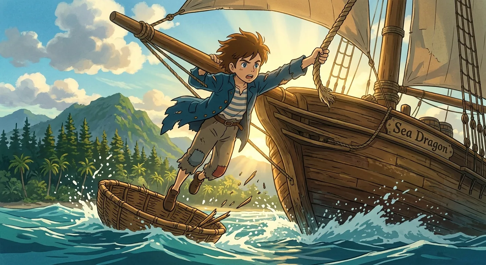
Adrift Among Waves and Sea Lions
Jim woke up in his tiny little boat, bobbing on the big blue waves near Treasure Island. He saw tall hills and rocky cliffs nearby. The waves crashed loudly against the rocks, sending white spray high into the air. Big sea lions lay on the rocks, barking and splashing into the water. Jim thought they looked very scary, so he decided not to go that way.
Instead, he let the ocean carry him toward a nicer beach with pretty green pine trees. His little boat bounced and danced over the waves like a happy bird. When Jim tried to paddle, the boat wobbled and splashed him with water. He learned to lie still and let the boat find her own way.
Soon Jim spotted a big ship floating nearby. Nobody seemed to be steering it. Jim had a brave idea. Maybe he could climb aboard and help. He paddled closer and closer. When the ship swung near him, Jim jumped up and grabbed onto a long wooden beam. He pulled himself up onto the deck, his heart beating fast with excitement.
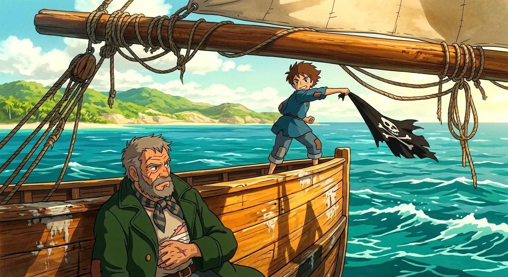
Blood and Brandy on the Hispaniola
Jim climbed onto the ship and almost fell into the water. But he held on tight and pulled himself onto the deck. The ship was a big mess with muddy footprints everywhere. Broken bottles rolled around on the floor.
Jim found two pirates on the deck. One was not moving at all. The other was Israel Hands, and he was hurt very badly. He asked Jim for something to drink. Jim went below and found the cabin all messy too. He got some water and food for himself first. Then he brought a drink to help Hands feel better. Jim told Hands that he was the captain now. He took down the pirate flag and threw it into the sea. Hands was too weak to argue. They made a deal. Hands would teach Jim how to sail the ship. Jim would help take care of him. But Jim watched Hands carefully. Something about the old pirate's sneaky smile made Jim feel he could not quite trust him.
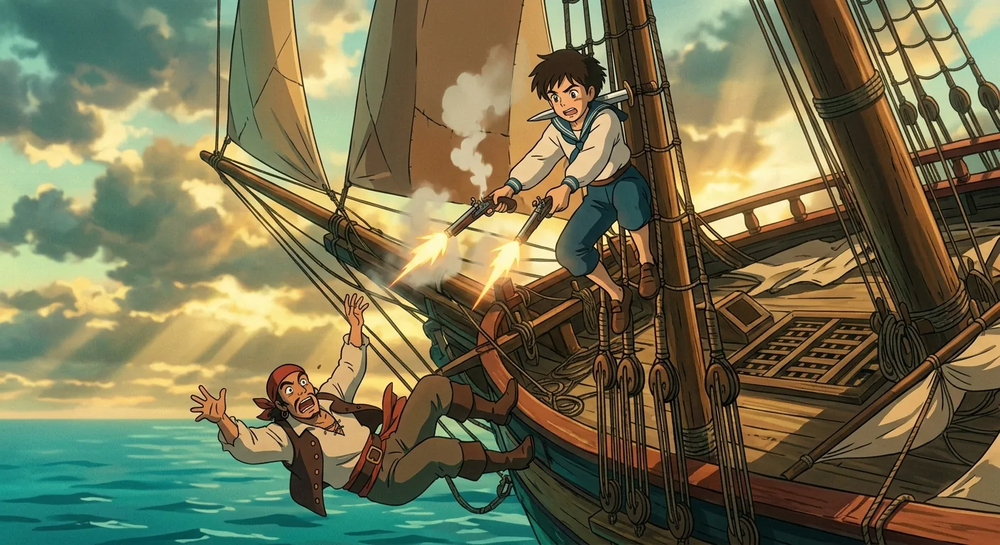
A Deadly Game of Wits
Jim Hawkins was on the ship with a hurt sailor named Israel Hands. They needed to steer the ship to a safe sandy beach. Hands asked Jim to go below deck to get him some wine. But Jim was clever and didn't quite trust him. He pretended to go down, then quietly peeked back up. He saw Hands hiding something in his jacket. Jim knew he had to be very careful now.
They worked together to sail the ship into a calm little bay. Hands was very good at steering even though he was hurt. Just as the ship reached the beach, Hands tried to catch Jim! But Jim was quick and scrambled up the tall ropes like a squirrel climbing a tree. He climbed so high that Hands couldn't reach him. From up in the ropes, Jim called down and Hands finally gave up. The ship was safe on the beach now, and Jim felt very brave and proud.
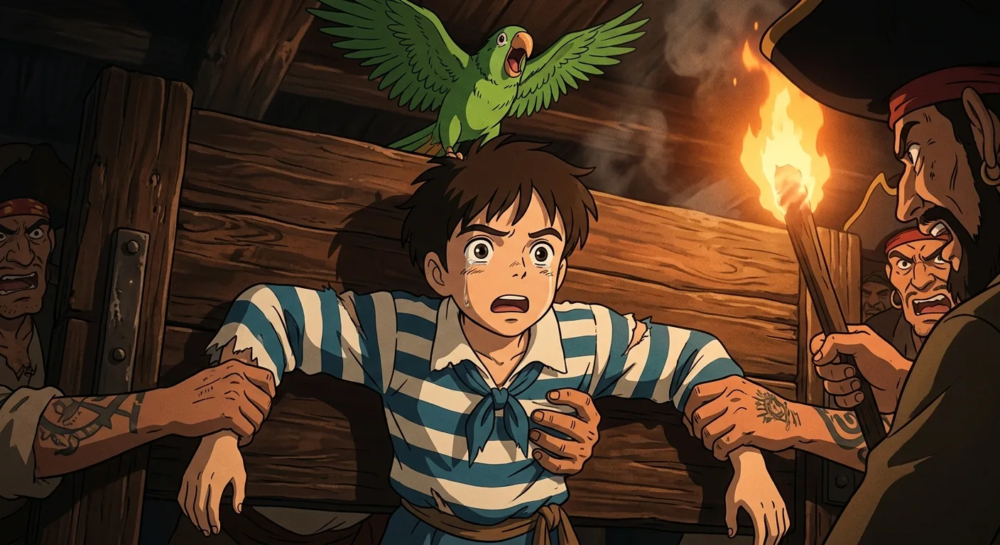
Jim's Victory at Sea
Jim was on the tall mast of the ship, holding on tight. He was scared because the ship was tilting way over to one side. A mean pirate named Israel had tried to hurt him, but Israel fell into the water below. Jim knew the bad man could not hurt anyone ever again.
Jim climbed down carefully and took care of a small cut on his shoulder. Then he worked hard to make the ship safe all by himself. He let down the sails and tied up the ropes. When the water got shallow, he waded to the shore and left the ship resting in the bay.
Jim felt so proud as he walked through the dark woods toward his friends. He wanted to tell them all about his brave adventure. He crept into the little house where everyone was sleeping. But then a parrot screeched loudly, "Pieces of eight!" The sleepers woke up fast. Oh no! These were not Jim's friends at all. They were the pirates, and now Jim was their prisoner.
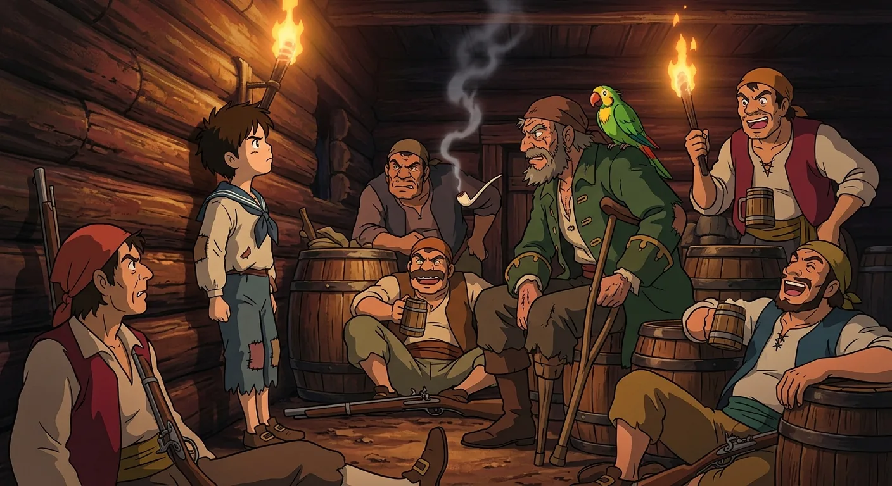
Pirates' Bargain and Silver's Offer
Jim Hawkins found himself in big trouble. The pirates had taken over the little wooden fort. Long John Silver sat there like a king, with his parrot on his shoulder. His fancy coat was torn and muddy from the woods. Jim felt very scared because he did not see his friends anywhere. He thought something bad had happened to them.
But then Silver told Jim something wonderful. His friends were safe! They had walked away to somewhere else. Jim felt so much better knowing they were okay. Silver tried to get Jim to join the pirates, using sweet words and smiles. But Jim was brave. He stood up tall and told the pirates everything he had done to stop their plans. He had hidden their ship where they could never find it! The pirates were so surprised. Silver had to shout to keep them calm. Later, Silver whispered to Jim that they should help each other. He even showed Jim a treasure map the doctor had given him, which was very strange indeed.
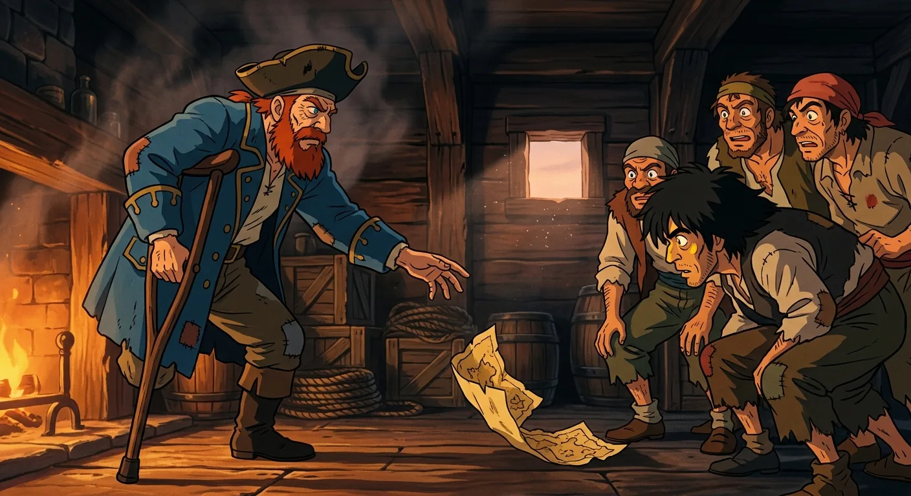
The Pirates' Mutiny Fails
The pirates went outside to talk and make a plan. Jim stayed inside the blockhouse with Silver. It was dark and quiet. Silver was being friendly to Jim, even though they were supposed to be on different sides.
Jim peeked through a hole in the wall. He saw the pirates standing together down the hill. One man was holding a torch. Another man was cutting something from a book. Jim wondered what they were doing. Then the pirates walked up to the blockhouse and came inside. One nervous man gave Silver a small piece of paper. It was called a black spot. This meant the pirates were upset with Silver and wanted a new captain.
Silver stayed very calm. The pirates said he made bad choices. But Silver talked back in a strong voice. Then he showed them something amazing. He had the treasure map! The pirates got so excited when they saw it. They cheered and laughed. They decided Silver should stay as their captain after all.
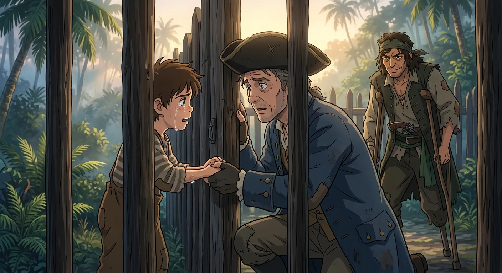
The Doctor's Dangerous Visit
Doctor Livesey came early in the morning to help the sick pirates. Jim felt embarrassed because he had sneaked away from his friends, and now he was stuck with the bad pirates. Silver acted cheerful and told the doctor that Jim was there. The doctor looked surprised but stayed calm and did his work. He checked on the sick pirates and told them the swampy air was making them ill.
Then the doctor asked to speak with Jim alone. Some pirates got angry, but Silver let Jim talk to the doctor through the wooden fence. Jim promised not to run away. The doctor was disappointed that Jim had left his friends, but Jim explained everything. He told the doctor about hiding the ship in a secret spot. The doctor was amazed and said Jim had helped save everyone many times. He promised to help Jim and even to help Silver if he could. Then the doctor walked away into the trees, leaving Jim to wait and hope.
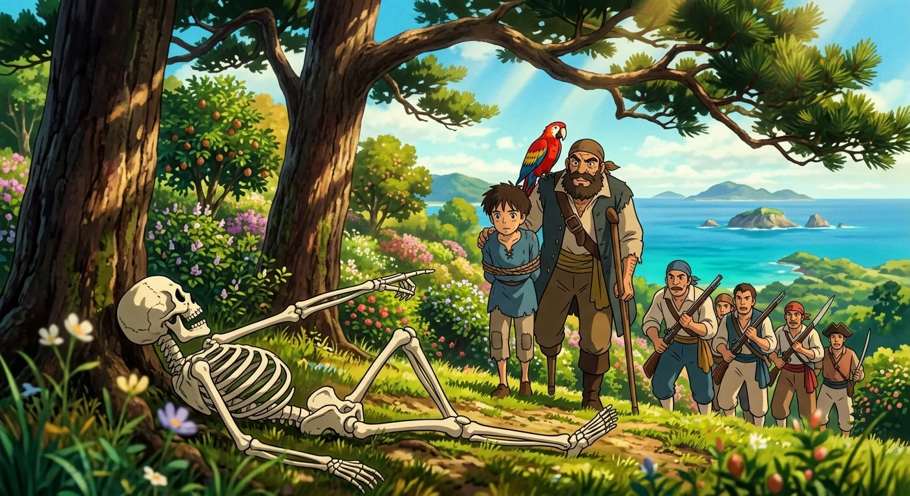
The Uneasy Alliance Seeks Flint's Gold
Silver pulled Jim aside and spoke quietly to him. He told Jim they needed to stick together and help each other stay safe. Silver had seen Jim choose to stay instead of running away, and this made Silver want to be his friend. They would watch out for each other, no matter what happened next.
Soon everyone ate breakfast by a big campfire. The pirates cooked way too much food and threw what was left into the flames. Jim noticed these pirates were not very good at planning ahead. After eating, the whole group set off to find the buried treasure. They rowed boats across the water and then climbed up a hill covered with sweet-smelling flowers and trees. Jim had to walk with the group, staying close to Silver. On Silver's shoulder sat his funny parrot, who chattered away happily. Near the top of the hill, the men found old bones laid out in a strange way, pointing toward an island. This was a clue left long ago to show the way to the treasure. The pirates grew very quiet and a little scared. But they kept walking together, wondering what they would find next.
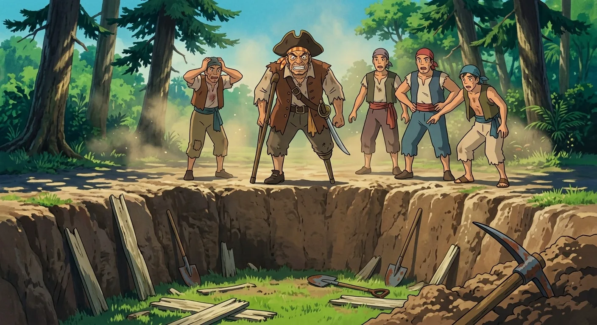
Flint's Ghost Haunts the Hunt
The group stopped on the hill to rest and look around. They could see the pretty sea, tall trees, and faraway islands. Silver checked his compass and said finding the treasure would be easy now. They just had to follow three tall trees in a row.
But the pirates felt scared. They kept whispering about their old captain Flint and his spooky stories. Then a strange, shaky voice sang out from the trees ahead. It was an old pirate song! The men turned pale with fright. "It's Flint's ghost!" they cried. Some fell to their knees, shaking.
But Silver was brave. He said ghosts cannot make echoes like real voices can. Then someone figured it out. It was just Ben Gunn, the lonely man left on the island long ago! Everyone felt better and laughed a little. They hurried toward a giant tree where the treasure was supposed to be buried. But when they got there, they found a big empty hole. Someone had already taken all the treasure!
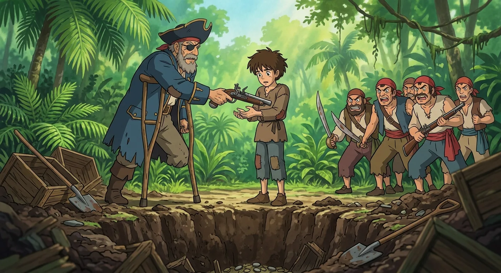
Ben Gunn's Secret Revealed
The pirates stood at the edge of a big hole in the ground. They were looking for treasure, but it was gone! Only one small coin was left in the dirt. Everyone was shocked and angry.
Silver thought fast and moved to stand with Jim. He wanted to be on the winning side. The other pirates were very mad at Silver. They thought he had tricked them. For a scary moment, everyone just stared at each other across the empty pit.
Then three loud shots came from the trees! Doctor Livesey, Gray, and Ben Gunn had come to help. The angry pirates ran away into the forest as fast as they could.
Ben Gunn had a wonderful secret. He had found the treasure long ago and moved it to a cozy cave! That night, everyone gathered in the cave with piles of shiny gold coins all around them. They had a feast by the warm fire while Captain Smollett rested. Silver sat quietly nearby, eating and waiting to see what would happen next.
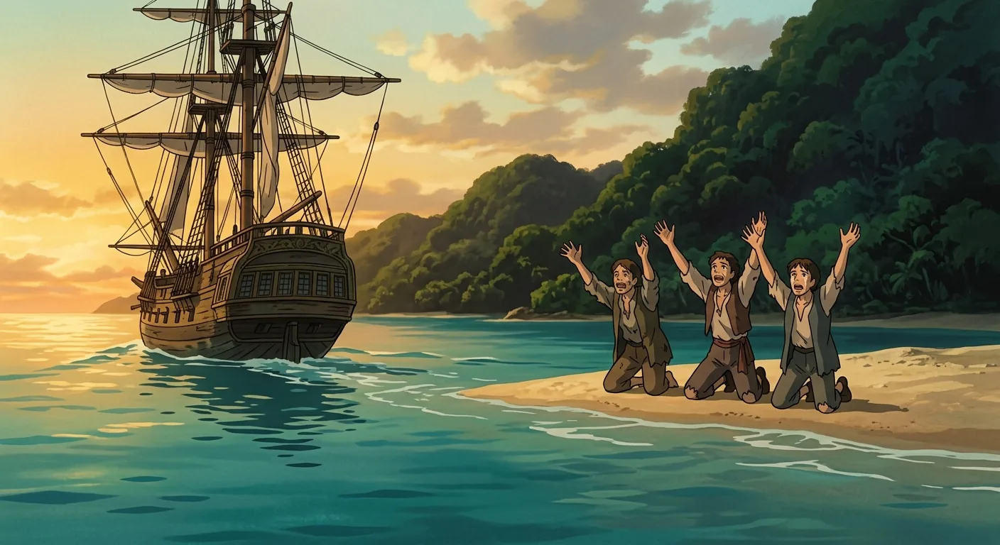
Gold, Farewell, and Marooned Mutineers
The next morning, everyone got to work moving the treasure. It was a long way to carry it to the ship. Gray and Ben Gunn rowed the boat back and forth while the others piled gold on the sandy beach. The gold bars were so heavy that grown-ups could only carry two at a time. Jim got to help by sorting coins into bags inside the cave. What wonderful coins they were! There were shiny pieces from England, France, and Spain. Some had pictures of kings, and others had funny wiggly marks. A few even had holes in the middle like necklaces. There were so many coins, like piles of autumn leaves.
Day after day they loaded treasure onto the Hispaniola. Finally it was time to sail away. They left the three grumpy pirates behind on the island with food and supplies. Along the way, Silver slipped off the ship with some coins and was never seen again. At last the ship reached home safely. The captain retired to rest. Gray became a ship captain himself one day. And Ben Gunn got a nice job as a singer at church. Jim never forgot his amazing adventure on that faraway island.
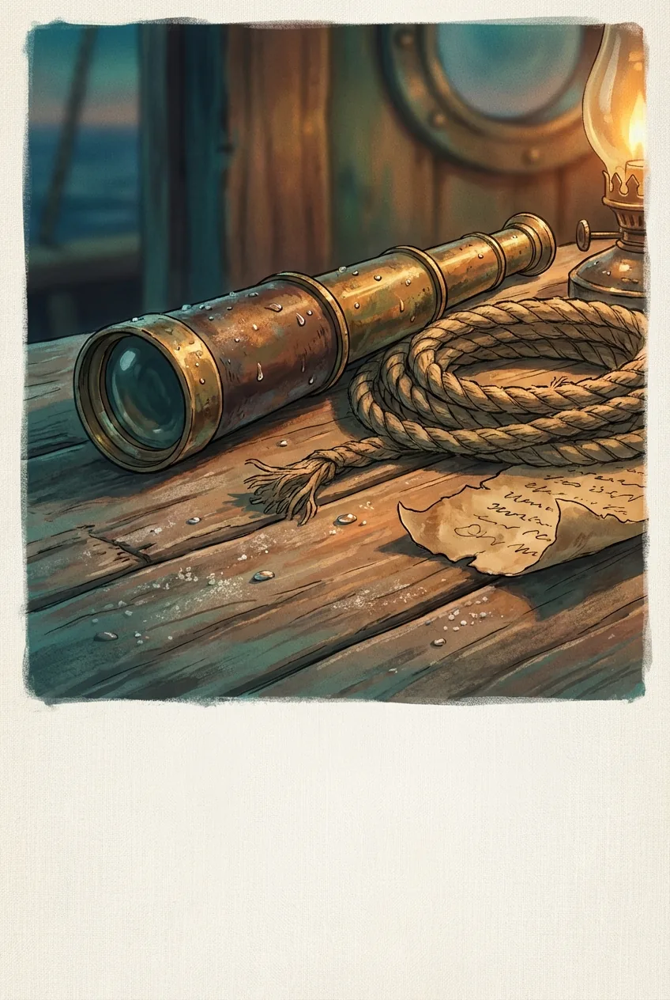